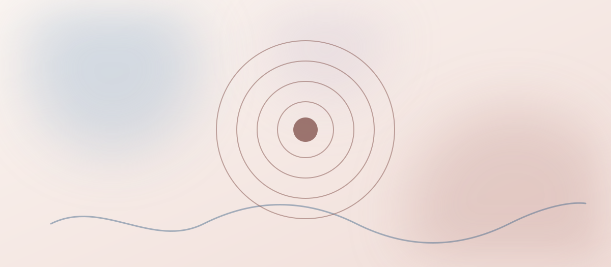

Como lidar com a ansiedade no dia a dia
A ansiedade faz parte da experiência humana, mas quando se torna constante, pode atrapalhar o sono, o trabalho e os relacionamentos. Algumas mudanças simples ajudam a reduzir seu impacto na rotina.
Reconheça os primeiros sinais
Perceber o corpo é o primeiro passo: tensão nos ombros, respiração curta e pensamentos acelerados costumam aparecer antes de uma crise mais intensa. Quanto mais cedo você identifica esses sinais, mais fácil é intervir antes que a ansiedade tome conta do momento.
Estratégias para o dia a dia
- Respiração diafragmática: inspire em 4 tempos, segure por 4 e solte em 6 — repita algumas vezes.
- Reduza a cafeína e fique atenta às noites de sono mal dormidas, que aumentam a sensibilidade a gatilhos.
- Escreva os pensamentos que estão gerando ansiedade — colocar no papel ajuda a organizar o que parece confuso.
- Pratique pausas curtas ao longo do dia, sem esperar o cansaço acumular.
- Evite tomar decisões importantes no auge de um pico de ansiedade.
Quando procurar ajuda profissional
Se a ansiedade está presente na maior parte dos dias, interfere no sono, no trabalho ou nas relações, vale considerar o acompanhamento psicológico. A terapia ajuda a entender a origem dos sintomas e construir ferramentas duradouras, para além dos alívios pontuais do dia a dia.